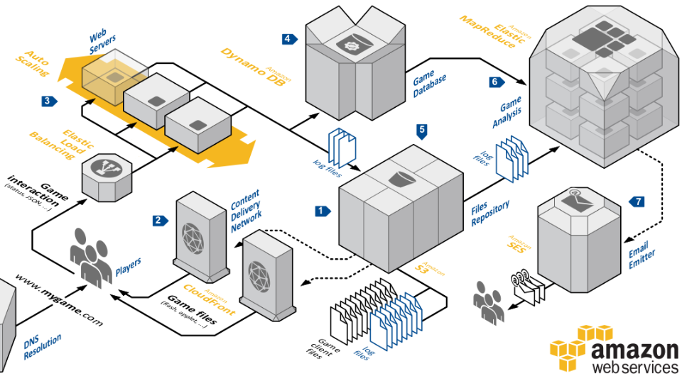

Beschreibung
Das AWS Architecture Center stellt eine unverzichtbare Ressource für Entwickler und Architekten dar, die in der AWS Cloud effektiv und effizient arbeiten möchten. Es wird von Amazon Web Services bereitgestellt und bildet eine umfangreiche Sammlung technischer Ressourcen, die dabei helfen, hochwertige Architekturen zu entwerfen, zu implementieren und zu optimieren.
Das Architecture Center fungiert als zentrale Anlaufstelle für Schulungs- und Beratungsressourcen, die von AWS zur Verfügung gestellt werden. Es bietet eine breite Palette von Informationen, Anleitungen, Best Practices und Fallstudien, um Architekturen in der AWS Cloud optimal zu gestalten und umzusetzen. Diese Ressourcen unterstützen Entwickler und Architekten dabei, die Komplexität der Cloud-Umgebung zu verstehen und effektive Lösungen zu entwickeln.
Die Abdeckung des Architecture Centers erstreckt sich über eine Vielzahl von Themen, darunter Systemarchitekturen, Entwurfsmuster, Benchmarks und bewährte Verfahren für die Verwendung von AWS-Services. Es bietet einen tiefen Einblick in bewährte Methoden und bewährte Verfahren, die es den Benutzern ermöglichen, das volle Potenzial der AWS-Plattform auszuschöpfen. Durch die regelmäßige Aktualisierung und Ergänzung der Inhalte bleibt das Center stets relevant und trägt dazu bei, den Entwicklern stets aktuelles Wissen zu vermitteln.
Benutzer haben Zugriff auf eine Vielzahl von Muster und Architekturen, die für ihre Projekte relevant sind. Diese Muster und Architekturen dienen als Referenz und Leitfaden, um bewährte Ansätze für die Entwicklung und Implementierung von Anwendungen und Systemen in der AWS-Cloud zu verstehen und anzuwenden. Darüber hinaus bietet das Center eine Plattform für den Austausch von Ideen und Erfahrungen zwischen Entwicklern und Architekten aus verschiedenen Branchen und Fachbereichen.
Das AWS Architecture Center dient nicht nur als Informationsquelle, sondern auch als Bildungsplattform. Es bietet Benutzern die Möglichkeit, ihr Wissen über AWS-Architekturen zu vertiefen und neue Fähigkeiten zu erlernen, um komplexe Projekte erfolgreich umzusetzen. Durch Schulungen, Zertifizierungen und praxisorientierte Lernressourcen unterstützt das Center die kontinuierliche berufliche Entwicklung von Entwicklern und Architekten in der AWS-Community.
Insgesamt stellt das AWS Architecture Center eine unverzichtbare Ressource dar, die dazu beiträgt, die Leistungsfähigkeit, Skalierbarkeit und Sicherheit von Anwendungen und Systemen in der AWS Cloud zu verbessern. Es ermöglicht Entwicklern und Architekten, ihre Fähigkeiten zu erweitern und innovative Lösungen zu entwickeln, die den Anforderungen ihrer Organisationen.
-AWS Architecture Center: Zentrale Ressource für Entwickler und Architekten in der AWS Cloud.
-Bietet umfangreiche technische Ressourcen für Gestaltung, Implementierung und Optimierung von Architekturen.
-Enthält Schulungs- und Beratungsressourcen von AWS sowie Best Practices und Fallstudien.
-Abdeckung umfasst Systemarchitekturen, Entwurfsmuster und bewährte Verfahren für AWS-Services.
-Dient als Referenz und Leitfaden für die Entwicklung in der AWS-Cloud.
-Plattform für Ideenaustausch und berufliche Weiterbildung.
-Verbessert Leistung, Skalierbarkeit und Sicherheit von Anwendungen in der AWS Cloud.
-Fördert Fähigkeitserweiterung und Entwicklung innovativer Lösungen auf der AWS-Plattform.
Schlüsselwörter
Schlüsselworte bzw. Schlagworte sollen uns dabei helfen, einen Service leichter zu erkennen, wenn es um Prüfungsfragen geht. Ließ dir die Fragen richtig durch und achte auf folgende Schlüsselworte. Sie können dir bei der Beantwortung der Fragen helfen.
- Architekturdokumentation
- Best Practices
- Referenzarchitekturen
- Lösungsdesign
- Whitepapers
- Anwendungsfälle
- Architekturdiagramme
- Architekturressourcen
- Technische Leitfäden
- Cloud-Architektur
Grafische Erklärung/ Beispiel für eine Architektur in der AWS Cloud
Prüfung Fragen
- Was ist eine der Hauptfunktionen des AWS Architecture Center?
- Welchen Zweck erfüllen die Referenzarchitekturen im AWS Architecture Center hauptsächlich?
- Wie können Entwickler das AWS Architecture Center am effektivsten nutzen?